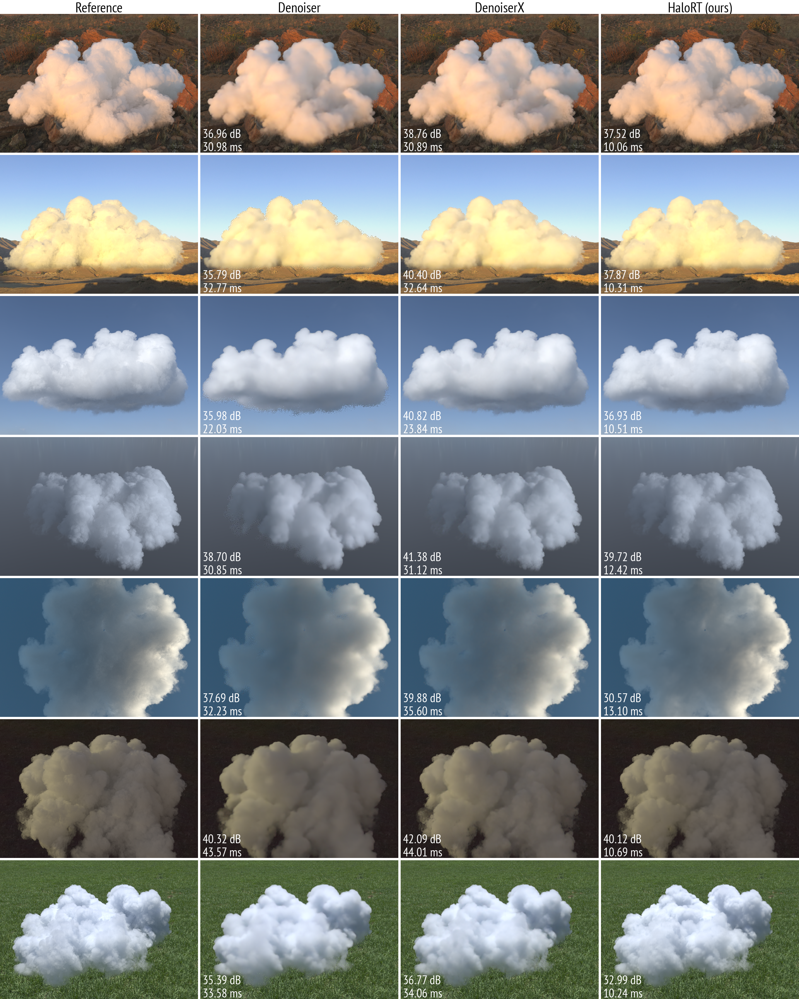

Real-Time Volumetric Light Transport Inference
without a Path
1 Technical University of Munich, Germany
Abstract
We present a real-time method for reconstructing fully integrated pixel radiance in rendered volumetric media under direct and ambient environmental illumination, using compact, low-cost scene features and statistics. Unlike Monte Carlo denoising pipelines for volumetric rendering, which depend on computationally expensive path-traced radiance estimates, our approach directly infers the final light-transport solution from inexpensive primary-ray and environment sample evaluations. We show that these features form a near-sufficient representation of the scene, enabling accurate reconstruction at substantially lower computational cost. Using an attention-augmented image-to-image network, we demonstrate that complete pixel radiance can be inferred directly from these auxiliary features, without requiring the original radiance signal. Operating in image space also provides a more stable computational cost as the camera zooms into or out of the volume, with substantially less dependence on volume density than approaches based on explicit multiple-scattering simulation. We demonstrate real-time performance and high reconstruction accuracy in challenging volumetric cloud scenarios.
Video
Examples

Setup
HaloRT, Denoiser and DenoiserX are all available as a minimal, standalone Python package built on rendervous (Vulkan-CUDA interop rendering) and vulky (raw Vulkan access), both published on PyPI with prebuilt wheels.
1. Install
pip install rendervous
pip install git+https://github.com/rendervous/HaloRT.git2. Render
import torch, rdv, halort
rdv.device(0)
# pretrained weights are bundled and loaded automatically
net = halort.create_scatnet("halort", width=512, height=512)
net.set_extinction(cloud_density_grid, density_scale=400.0)
net.set_scattering_albedo((0.99, 0.99, 0.99))
net.set_anisotropy(0.3)
net.set_environment(hdr_environment_tensor)
net.set_camera(0, origin=(0, 0.5, 2.5), target=(0, 0, 0), up=(0, 1, 0))
net.set_light(light_direction=(0, 1, 0), light_intensity=(1, 1, 1))
with torch.no_grad():
radiance = net.reconstruct_radiance_fused()See the repository's README and Colab notebooks for a complete walkthrough, including scene setup from scratch.